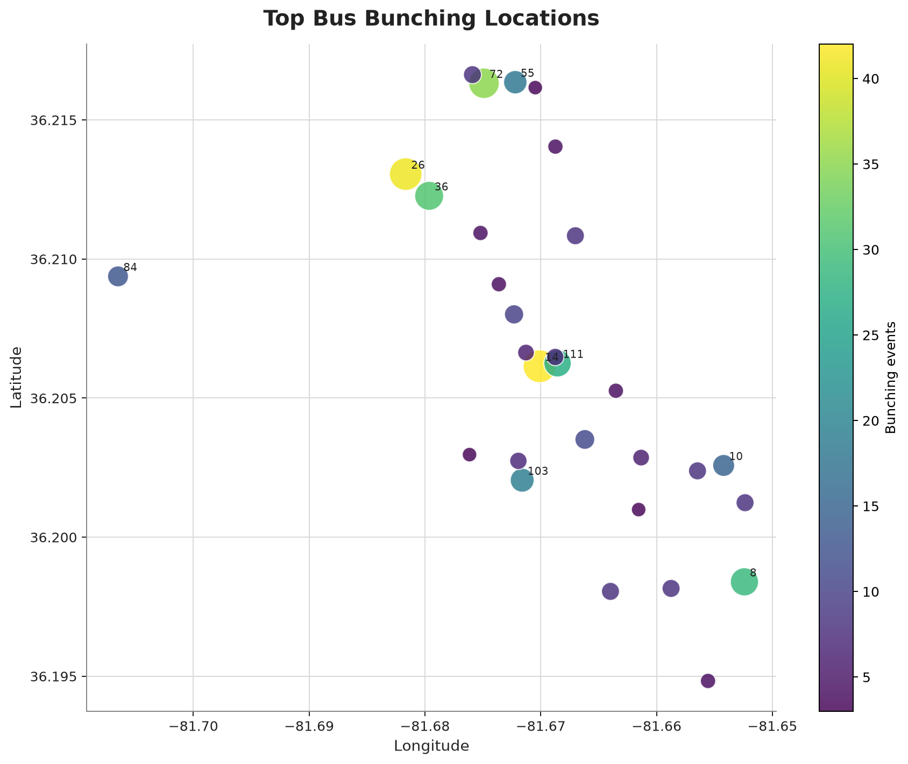

Sep 5, 2026
0 stop-level observations.
No stop-level bunching observations were detected for this service date.
The current export does not show an elevated daily signal.
IP3 Partner Agency
Boone, North Carolina. Current bus-bunching observations from the GTFS-RT export.
Patterns concentrate by route, hour, and repeated stop locations.
Top route: R. Busiest hour: 17:00.
Recurring-risk ranking based on the AppalCART observations already collected.
Use as a prioritization screen. It does not predict a specific bus will bunch.
| Day | Route | Hour | Likely location | Historical observations | Basis |
|---|---|---|---|---|---|
| Tue Sep 29 | R | 17:00 | Kingswood [55] | 16 | Same weekday history (Tuesday) |
| Tue Sep 29 | PK | 16:00 | ASU Mountain Laurel Hall [14] | 12 | Same weekday history (Tuesday) |
| Tue Sep 29 | POP | 16:00 | ASU Convocation Center [27] | 10 | Same weekday history (Tuesday) |
| Tue Sep 29 | R | 18:00 | Dan'l Boone Inn [72] | 8 | Same weekday history (Tuesday) |
| Tue Sep 29 | PK | 17:00 | ASU Garwood Hall [26] | 7 | Same weekday history (Tuesday) |
| Tue Sep 29 | R | 16:00 | NC 105 Ext / Azalea Dr [111] | 5 | Same weekday history (Tuesday) |
| Day | Route | Hour | Likely location | Historical observations | Basis |
|---|---|---|---|---|---|
| Tue Sep 29 | R | 17:00 | Kingswood [55] | 16 | Same weekday history (Tuesday) |
| Tue Sep 29 | PK | 16:00 | ASU Mountain Laurel Hall [14] | 12 | Same weekday history (Tuesday) |
| Wed Sep 30 | PK | 17:00 | ASU Garwood Hall [26] | 17 | Same weekday history (Wednesday) |
| Wed Sep 30 | R | 17:00 | Dan'l Boone Inn [72] | 11 | Same weekday history (Wednesday) |
| Thu Oct 1 | PK | 16:00 | ASU Garwood Hall [26] | 12 | Same weekday history (Thursday) |
| Thu Oct 1 | R | 16:00 | Watauga Medical Center [8] | 10 | Same weekday history (Thursday) |
| Fri Oct 2 | R | 18:00 | Walmart 2 [108] | 15 | Same weekday history (Friday) |
| Fri Oct 2 | R | 17:00 | Kingswood [55] | 13 | Same weekday history (Friday) |

Generated from the event export.


| Date | Hour | Routes | Observations |
|---|---|---|---|
| 2026-09-18 | 17:00 | 3 | 21 |
| 2026-08-25 | 16:00 | 3 | 17 |
| 2026-08-28 | 18:00 | 2 | 16 |
| 2026-09-02 | 17:00 | 2 | 15 |
| 2026-08-24 | 16:00 | 1 | 13 |
| 2026-08-24 | 17:00 | 1 | 13 |
| 2026-08-25 | 17:00 | 2 | 12 |
| 2026-09-10 | 16:00 | 3 | 12 |
| 2026-09-14 | 17:00 | 2 | 12 |
| 2026-09-14 | 12:00 | 1 | 11 |

Static map from the generated visuals output.
Open interactive map
| Route | Observations | Top stop | At stop | Top hour | At hour |
|---|---|---|---|---|---|
| R | 202 | Dan'l Boone Inn | 35 | 17:00 | 68 |
| PK | 110 | ASU Garwood Hall | 25 | 17:00 | 39 |
| P | 72 | ASU Garwood Hall | 16 | 16:00 | 25 |
| POP | 33 | Hodges Gap Rd | 13 | 16:00 | 12 |
| T | 6 | ASU Mountain Laurel Hall | 3 | 18:00 | 6 |
| GY | 1 | Ivy Terrace | 1 | 18:00 | 1 |
| W | 1 | The Finmore | 1 | 15:00 | 1 |
| B | 1 | ASU Peacock Traffic Circle | 1 | 08:00 | 1 |
| Stop | Stop ID | Routes affected | Observations |
|---|---|---|---|
| ASU Mountain Laurel Hall | 14 | 3 | 42 |
| ASU Garwood Hall | 26 | 2 | 41 |
| Dan'l Boone Inn | 72 | 1 | 35 |
| ASU Skywalk | 36 | 2 | 31 |
| Watauga Medical Center | 8 | 2 | 29 |
| NC 105 Ext / Azalea Dr | 111 | 1 | 27 |
| Vet Clinic on Wilson Dr | 103 | 1 | 19 |
| Kingswood | 55 | 1 | 18 |
| Parks & Rec | 10 | 2 | 15 |
| Hodges Gap Rd | 84 | 1 | 13 |
Weather is context for interpretation, not a causal finding.
| Time | Temp | Wind | Conditions |
|---|---|---|---|
| Sep 22, 2026 at 11:00 PM ET | 61.2 F | 8.5 mph | Rain |
| Sep 23, 2026 at 12:00 AM ET | 60.3 F | 8.6 mph | Rain |
| Sep 23, 2026 at 1:00 AM ET | 58.4 F | 9.8 mph | Rain |
| Sep 23, 2026 at 2:00 AM ET | 57.0 F | 10.0 mph | Light Rain |
| Sep 23, 2026 at 3:00 AM ET | 56.3 F | 9.4 mph | Drizzle |
| Sep 23, 2026 at 4:00 AM ET | 55.9 F | 8.0 mph | Drizzle |
Observed AppalCART bus-bunching context from the current export.
0 stop-level observations.
No stop-level bunching observations were detected for this service date.
The current export does not show an elevated daily signal.
3 stop-level observations.
All detected observations were on Route R at Dan'l Boone Inn in the 14:00 hour.
Below the observed-date median of 25 observations; the current export does not show an elevated daily signal.